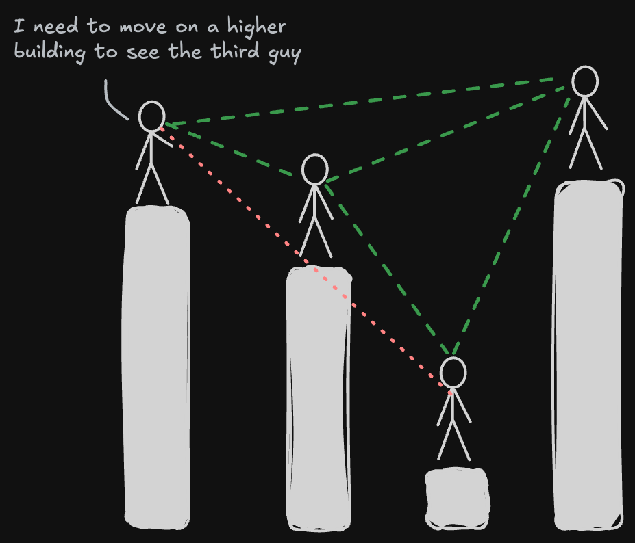

I have always been a romantic, probably due to the amount and genre of songs I was exposed to in my childhood. The first song I remember is from an Italian songwriter who sings about how everything he did reminded him of a special someone. Even as a child, I could sense a hint of the emotional struggle in his lyrics, though my young heart had yet to experience the full spectrum of joy and sorrow that comes with love, which governs our heartbeats.
But this essay isn't about romance or love; it's about heartbeats, and specifically how we can visualise and understand them with data science. My passion for complex systems and the way they behave has always driven me, as a person and as a data scientist. During my master's I became particularly interested in measuring and quantifying complex systems, extracting any relevant structure from what might at first look like a chaotic mess.
The approach here is one of my favourite ways to do that: the visibility graph. I will introduce how visibility graphs work, their mathematical side, and an artistic way to look at a heartbeat with them.
Understanding visibility graphs through skyscrapers
A visibility graph represents relationships between data points. To make it tangible, picture a city of skyscrapers. Each skyscraper is a data point, and its height is the value of that point. This city is quite particular: all the skyscrapers stand in a line along a single street, just like the points of a time series.
Now imagine you are standing on the roof of one of these skyscrapers. From there you can see some buildings down the line, while others are hidden by taller ones in between.
The concept of visibility
In our metaphor, visibility means you can see the roof of one skyscraper from the roof of another. For two skyscrapers to see each other there must be no building in between that is as tall or taller than the line of sight. If skyscraper A is 50 metres tall and B, further down the street, is 100 metres, A can see B unless something in between rises above the line joining their roofs. Put a 120-metre tower C between them, and A can no longer see B.

That is all we need to build a network. Each skyscraper becomes a node, and an edge joins two nodes whenever their roofs can see each other. Try it: drag the roofs up and down, or click a building to see what it can see.
The maths behind it
Non-metaphorically, a visibility graph turns a time series into a network: each data point is a node, and two nodes are linked when they have a clear line of sight. Quoting the original paper [1]:
Given a time series, two data values (ta, ya) and (tb, yb) are connected if any other value (tc, yc) between them fulfils $$y_c < y_b + (y_a - y_b)\,\frac{t_b - t_c}{t_b - t_a}$$
By construction, the graph is always:
- Connected: each node sees at least its nearest neighbours, left and right.
- Undirected: the algorithm defines no direction for the links.
- Invariant under affine transformations: rescaling or shifting either axis doesn't change who sees whom.
The straightforward algorithm takes $O(N^2)$ time for $N$ points; faster methods, such as the horizontal visibility graph, bring that down to $O(N \log N)$ [2, 3].
Why bother?
Visibility graphs capture both local and global properties of a series. The degree of a node describes its immediate neighbourhood; the average path length and the clustering coefficient describe the structure as a whole [4]. For fractal time series, the degree distribution follows a power law, $P(k) \sim k^{-\gamma}$, which has been used to characterise the complexity and self-similarity of a series [5].
They have found uses well beyond the textbook: in finance, to study market dynamics and exchange rates [6]; in neuroscience, to turn EEG or fMRI signals into networks and characterise how brain regions connect and synchronise [7].
You make my heart beat
Now we know how visibility graphs work. I hope I didn't lose too many of you in the serious part, but it makes the next bit easier to appreciate. When I had some time, I used to go for a run around the neighbourhood and record it with my sports watch. Among everything it records, there is the heartbeat.
The heartbeat time series becomes a graph, an object I studied for many years of my life.
Ever since I first heard about visibility graphs, I wanted to analyse something unseen and see what it would actually look like. The heartbeat was one of those things, but during my PhD I had neither a good smartwatch nor a proper way to measure it. Below is one of my runs: 691 readings over 53 minutes. Press play and watch the graph fill up as the run goes on. The heart in the corner beats at the rate of the moment being replayed.